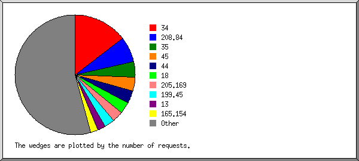
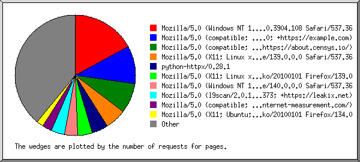
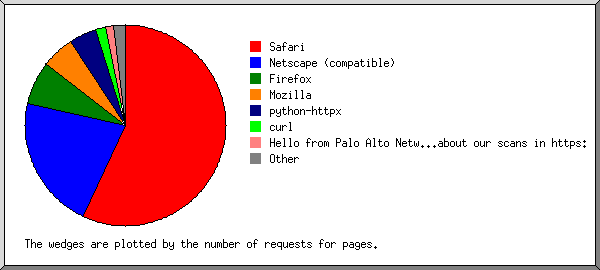
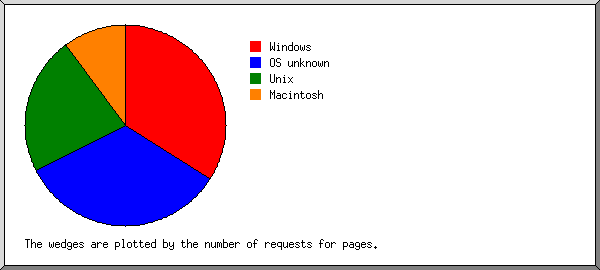
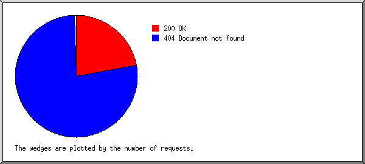
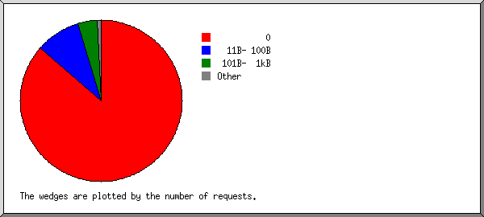
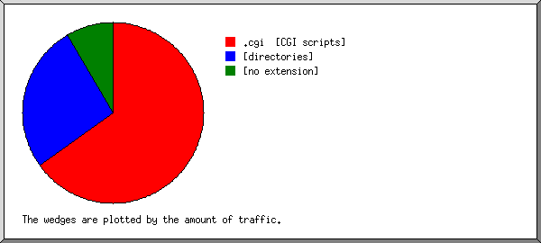
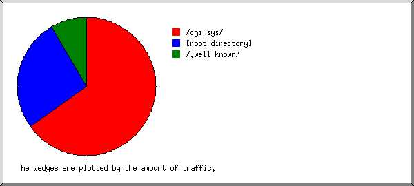
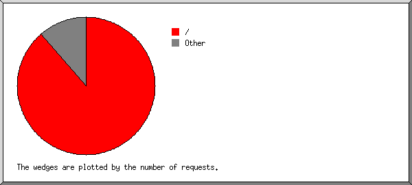

Server Statistiken für fbges.magentaweb.org
Server Statistiken für fbges.magentaweb.org
Programmstart: Di, 30. Sep 2025 07:52.
Auswertungszeitraum: Mo, 29. Sep 2025 01:53 bis Di, 30. Sep 2025 03:29 (1,07 Tage).
Server Statistiken für fbges.magentaweb.orgProgrammstart: Di, 30. Sep 2025 07:52.
Auswertungszeitraum: Mo, 29. Sep 2025 01:53 bis Di, 30. Sep 2025 03:29 (1,07 Tage).
(Andere Statistiken: Anfang | Zusammenfassung | Monatsbericht | Wochentage Übersicht | Tageszeit Übersicht | Domänen Bericht | Organisationsbericht | Verweis Fehlerbericht | Browser Bericht | Browser Übersicht | Betriebsystem Bericht | Statuscodebericht | Dateigrößen Übersicht | Dateityp Bericht | Verzeichnisbericht | Anfrage Bericht)
Erfolgreich bearbeitete Anfragen: 54
Durchschnittlich bearbeitete Anfragen pro Tag: 49
Erfolgreich bearbeitete Seitenanfragen: 42
Durchschnittlich bearbeitete Seitenanfragen pro Tag: 38
Fehlgeschlagene Anfragen: 62
Anzahl unterschiedlicher verlangter Dateien: 7
Anzahl unterschiedlicher anfragender Hosts: 37
Menge verschickter Daten: 7,06 kiloBytes
Durchschnittliche Menge verschickter Daten pro Tag: 6,62 kiloBytes
(Andere Statistiken: Anfang | Zusammenfassung | Monatsbericht | Wochentage Übersicht | Tageszeit Übersicht | Domänen Bericht | Organisationsbericht | Verweis Fehlerbericht | Browser Bericht | Browser Übersicht | Betriebsystem Bericht | Statuscodebericht | Dateigrößen Übersicht | Dateityp Bericht | Verzeichnisbericht | Anfrage Bericht)
Jede Einheit ( ) entspricht 2 Seitenanfragen oder einem Teil davon.
) entspricht 2 Seitenanfragen oder einem Teil davon.
| Monate | #Anf. | Seit. | |
|---|---|---|---|
| Sep 2025 | 54 | 42 |   |
Monat mit der stärksten Nutzung: Sep 2025 (42 Seitenanfragen).
(Andere Statistiken: Anfang | Zusammenfassung | Monatsbericht | Wochentage Übersicht | Tageszeit Übersicht | Domänen Bericht | Organisationsbericht | Verweis Fehlerbericht | Browser Bericht | Browser Übersicht | Betriebsystem Bericht | Statuscodebericht | Dateigrößen Übersicht | Dateityp Bericht | Verzeichnisbericht | Anfrage Bericht)
Jede Einheit () entspricht 1 Seitenanfrage.
| Tag | #Anf. | Seit. | |
|---|---|---|---|
| So | 0 | 0 | |
| Mo | 53 | 41 |   |
| Di | 1 | 1 | |
| Mi | 0 | 0 | |
| Do | 0 | 0 | |
| Fr | 0 | 0 | |
| Sa | 0 | 0 |
(Andere Statistiken: Anfang | Zusammenfassung | Monatsbericht | Wochentage Übersicht | Tageszeit Übersicht | Domänen Bericht | Organisationsbericht | Verweis Fehlerbericht | Browser Bericht | Browser Übersicht | Betriebsystem Bericht | Statuscodebericht | Dateigrößen Übersicht | Dateityp Bericht | Verzeichnisbericht | Anfrage Bericht)
Jede Einheit () entspricht 1 Seitenanfrage.
| Stunde | #Anf. | Seit. | |
|---|---|---|---|
| 0 | 0 | 0 | |
| 1 | 18 | 6 |  |
| 2 | 5 | 5 | |
| 3 | 17 | 17 | |
| 4 | 0 | 0 | |
| 5 | 0 | 0 | |
| 6 | 0 | 0 | |
| 7 | 1 | 1 | |
| 8 | 4 | 4 | |
| 9 | 0 | 0 | |
| 10 | 0 | 0 | |
| 11 | 3 | 3 | |
| 12 | 2 | 2 | |
| 13 | 1 | 1 | |
| 14 | 2 | 2 | |
| 15 | 0 | 0 | |
| 16 | 0 | 0 | |
| 17 | 0 | 0 | |
| 18 | 0 | 0 | |
| 19 | 0 | 0 | |
| 20 | 0 | 0 | |
| 21 | 0 | 0 | |
| 22 | 0 | 0 | |
| 23 | 1 | 1 | |
(Andere Statistiken: Anfang | Zusammenfassung | Monatsbericht | Wochentage Übersicht | Tageszeit Übersicht | Domänen Bericht | Organisationsbericht | Verweis Fehlerbericht | Browser Bericht | Browser Übersicht | Betriebsystem Bericht | Statuscodebericht | Dateigrößen Übersicht | Dateityp Bericht | Verzeichnisbericht | Anfrage Bericht)
Ausgabe aller Domänen, sortiert nach Transfervolumen.
| #Anf. | %Bytes | Domäne |
|---|---|---|
| 54 | 100% | [Nicht auflösbare numerische Adressen] |
(Andere Statistiken: Anfang | Zusammenfassung | Monatsbericht | Wochentage Übersicht | Tageszeit Übersicht | Domänen Bericht | Organisationsbericht | Verweis Fehlerbericht | Browser Bericht | Browser Übersicht | Betriebsystem Bericht | Statuscodebericht | Dateigrößen Übersicht | Dateityp Bericht | Verzeichnisbericht | Anfrage Bericht)

Ausgabe der ersten 20 Organisationen gewichtet nach Gesamtanzahl der Anfragen, sortiert nach Gesamtanzahl der Anfragen.
| #Anf. | %Bytes | Organisation |
|---|---|---|
| 8 | 8,62% | 35 |
| 6 | 8,62% | 34 |
| 5 | 2,41% | 44 |
| 5 | 64.15 | |
| 3 | 3,61% | 13 |
| 3 | 192.175 | |
| 3 | 25,86% | 159.65 |
| 3 | 25,86% | 139.59 |
| 2 | 2,41% | 23 |
| 2 | 18 | |
| 2 | 54 | |
| 2 | 1,77% | 74 |
| 2 | 2,41% | 3 |
| 2 | 8,62% | 192.64 |
| 1 | 8,62% | 205.169 |
| 1 | 206.189 | |
| 1 | 185.247 | |
| 1 | 1,20% | 47 |
| 1 | 167.94 | |
| 1 | 199.45 |
(Andere Statistiken: Anfang | Zusammenfassung | Monatsbericht | Wochentage Übersicht | Tageszeit Übersicht | Domänen Bericht | Organisationsbericht | Verweis Fehlerbericht | Browser Bericht | Browser Übersicht | Betriebsystem Bericht | Statuscodebericht | Dateigrößen Übersicht | Dateityp Bericht | Verzeichnisbericht | Anfrage Bericht)
Ausgabe aller verweisenden URLs, sortiert nach Anzahl fehlgeschlagener Anfragen.
| #Anf. | URL |
|---|---|
| 1 | http://www.fbges.magentaweb.org/ |
(Andere Statistiken: Anfang | Zusammenfassung | Monatsbericht | Wochentage Übersicht | Tageszeit Übersicht | Domänen Bericht | Organisationsbericht | Verweis Fehlerbericht | Browser Bericht | Browser Übersicht | Betriebsystem Bericht | Statuscodebericht | Dateigrößen Übersicht | Dateityp Bericht | Verzeichnisbericht | Anfrage Bericht)

Ausgabe aller Browser mit mindestens 1 Seitenanfrage, sortiert nach Anzahl der Seitenanfragen.
| #Anf. | Seit. | Browser |
|---|---|---|
| 8 | 8 | Mozilla/5.0 (Windows NT 10.0; Win64; x64) AppleWebKit/537.36 (KHTML, like Gecko) Chrome/140.0.0.0 Safari/537.36 |
| 4 | 4 | Mozilla/5.0 (compatible; CMS-Checker/1.0; +https://example.com) |
| 3 | 3 | Mozilla/5.0 (Windows NT 10.0; Win64; x64) AppleWebKit/537.36 (KHTML, like Gecko) Chrome/78.0.3904.108 Safari/537.36 |
| 3 | 3 | Mozilla/5.0 (Linux; Android 5.1.1; SM-J111F) |
| 3 | 3 | Mozilla/5.0 (Macintosh; Intel Mac OS X 10_15_7) AppleWebKit/537.36 (KHTML, like Gecko) Chrome/113.0.0.0 Safari/537.36 |
| 3 | 3 | Mozilla/5.0 (iPhone; CPU iPhone OS 14_4 like Mac OS X) AppleWebKit/605.1.15 (KHTML, like Gecko) Version/15.4 Mobile/15E148 Safari/604.1 |
| 2 | 2 | Go-http-client/1.1 |
| 2 | 2 | Mozilla/5.0 (Linux; Android 6.0; HTC One M9 Build/MRA876937) AppleWebKit/537.36 (KHTML, like Gecko) Chrome/52.0.1248.98 Mobile Safari/537.3 |
| 2 | 2 | Mozilla/5.0 (compatible; CensysInspect/1.1; +https://about.censys.io/) |
| 1 | 1 | Mozilla/5.0 (Windows NT 6.2; Win64; x64) AppleWebKit/537.36 (KHTML, like Gecko) Chrome/32.0.1667.0 Safari/537.36 |
| 1 | 1 | Mozilla/5.0 (X11; Linux x86_64) AppleWebKit/537.36 (KHTML, like Gecko) Chrome/139.0.0.0 Safari/537.36 |
| 1 | 1 | Mozilla/5.0 (X11; Linux x86_64; rv:122.0) Gecko/20100101 Firefox/122.0 |
| 1 | 1 | Mozilla/5.0 (X11; Linux x86_64) AppleWebKit/537.36 (KHTML, like Gecko) Chrome/34.0.1847.137 Safari/4E423F |
| 1 | 1 | Mozilla/5.0 (Windows NT 10.0; Win64; x64) AppleWebKit/537.36 (KHTML, like Gecko) Chrome/70.0.3538.102 Safari/537.36 Edge/18.19582 |
| 1 | 1 | Mozilla/5.0 (Linux; Android 8.0.0; SM-G965U Build/R16NW) AppleWebKit/537.36 (KHTML, like Gecko) Chrome/63.0.3239.111 Mobile Safari/537.36 |
| 1 | 1 | Mozilla/5.0 (Macintosh; Intel Mac OS X 10.15; rv:120.0) Gecko/20100101 Firefox/120.0 |
| 1 | 1 | Mozilla/5.0 (Windows NT 10.0) AppleWebKit/537.36 (KHTML, like Gecko) Chrome/106.0.0.0 Safari/537.36 |
| 1 | 1 | Mozilla/5.0 (Windows NT 10.0; Win64; x64) AppleWebKit/537.36 (KHTML, like Gecko) Chrome/107.0.0.0 Safari/537.36 Edg/107.0.1418.62 |
| 1 | 1 | Mozilla/5.0 (compatible; InternetMeasurement/1.0; +https://internet-measurement.com/) |
| 12 | 0 | [nicht angezeigt: 2 Browser] |
(Andere Statistiken: Anfang | Zusammenfassung | Monatsbericht | Wochentage Übersicht | Tageszeit Übersicht | Domänen Bericht | Organisationsbericht | Verweis Fehlerbericht | Browser Bericht | Browser Übersicht | Betriebsystem Bericht | Statuscodebericht | Dateigrößen Übersicht | Dateityp Bericht | Verzeichnisbericht | Anfrage Bericht)

Ausgabe aller Browser mit mindestens 1 Seitenanfrage, sortiert nach Anzahl der Seitenanfragen.
| Nr. | #Anf. | Seit. | Browser |
|---|---|---|---|
| 1 | 26 | 26 | Safari |
| 22 | 22 | Safari/537 | |
| 3 | 3 | Safari/604 | |
| 1 | 1 | Safari/4E423F | |
| 2 | 17 | 7 | Netscape (compatible) |
| 3 | 3 | 3 | Mozilla |
| 4 | 2 | 2 | Go-http-client |
| 2 | 2 | Go-http-client/1 | |
| 5 | 2 | 2 | Firefox |
| 1 | 1 | Firefox/122 | |
| 1 | 1 | Firefox/120 | |
| 2 | 0 | [nicht angezeigt: 1 Browser] |
(Andere Statistiken: Anfang | Zusammenfassung | Monatsbericht | Wochentage Übersicht | Tageszeit Übersicht | Domänen Bericht | Organisationsbericht | Verweis Fehlerbericht | Browser Bericht | Browser Übersicht | Betriebsystem Bericht | Statuscodebericht | Dateigrößen Übersicht | Dateityp Bericht | Verzeichnisbericht | Anfrage Bericht)

Ausgabe aller Betriebsysteme, sortiert nach Anzahl der Seitenanfragen.
| Nr. | #Anf. | Seit. | Betriebsystem |
|---|---|---|---|
| 1 | 15 | 15 | Windows |
| 14 | 14 | Windows NT | |
| 1 | 1 | unbekannt Windows | |
| 2 | 9 | 9 | Unix |
| 9 | 9 | Linux | |
| 3 | 21 | 9 | unbekanntes Betriebsystem |
| 4 | 7 | 7 | Macintosh |
(Andere Statistiken: Anfang | Zusammenfassung | Monatsbericht | Wochentage Übersicht | Tageszeit Übersicht | Domänen Bericht | Organisationsbericht | Verweis Fehlerbericht | Browser Bericht | Browser Übersicht | Betriebsystem Bericht | Statuscodebericht | Dateigrößen Übersicht | Dateityp Bericht | Verzeichnisbericht | Anfrage Bericht)

Ausgabe aller Statuscodes, numerisch sortiert.
| #Anf. | Status code |
|---|---|
| 54 | 200 OK |
| 62 | 404 Dokument nicht gefunden |
(Andere Statistiken: Anfang | Zusammenfassung | Monatsbericht | Wochentage Übersicht | Tageszeit Übersicht | Domänen Bericht | Organisationsbericht | Verweis Fehlerbericht | Browser Bericht | Browser Übersicht | Betriebsystem Bericht | Statuscodebericht | Dateigrößen Übersicht | Dateityp Bericht | Verzeichnisbericht | Anfrage Bericht)

| Dateigröße | #Anf. | %Bytes |
|---|---|---|
| 0 | 32 | |
| 1B- 10B | 0 | |
| 11B- 100B | 12 | 13,81% |
| 101B- 1kB | 10 | 86,19% |
(Andere Statistiken: Anfang | Zusammenfassung | Monatsbericht | Wochentage Übersicht | Tageszeit Übersicht | Domänen Bericht | Organisationsbericht | Verweis Fehlerbericht | Browser Bericht | Browser Übersicht | Betriebsystem Bericht | Statuscodebericht | Dateigrößen Übersicht | Dateityp Bericht | Verzeichnisbericht | Anfrage Bericht)

Ausgabe aller Dateitypen mit mindestens 0,1% des Transfervolumens, sortiert nach Transfervolumen.
| #Anf. | %Bytes | Erweiterung |
|---|---|---|
| 42 | 86,19% | [Verzeichnisse] |
| 12 | 13,81% | [keine Extension] |
(Andere Statistiken: Anfang | Zusammenfassung | Monatsbericht | Wochentage Übersicht | Tageszeit Übersicht | Domänen Bericht | Organisationsbericht | Verweis Fehlerbericht | Browser Bericht | Browser Übersicht | Betriebsystem Bericht | Statuscodebericht | Dateigrößen Übersicht | Dateityp Bericht | Verzeichnisbericht | Anfrage Bericht)

Ausgabe aller Verzeichnisse mit mindestens 0,01% des Transfervolumens, sortiert nach Transfervolumen.
| #Anf. | %Bytes | Verzeichnis |
|---|---|---|
| 42 | 86,19% | [Root-Verzeichnis] |
| 12 | 13,81% | /.well-known/ |
(Andere Statistiken: Anfang | Zusammenfassung | Monatsbericht | Wochentage Übersicht | Tageszeit Übersicht | Domänen Bericht | Organisationsbericht | Verweis Fehlerbericht | Browser Bericht | Browser Übersicht | Betriebsystem Bericht | Statuscodebericht | Dateigrößen Übersicht | Dateityp Bericht | Verzeichnisbericht | Anfrage Bericht)

Ausgabe aller verlangten Dateien mit mindestens 20 Anfragen, sortiert nach Gesamtanzahl der Anfragen.
| #Anf. | %Bytes | letzter Zugriff | Datei |
|---|---|---|---|
| 42 | 86,19% | 30. Sep 25 03:29 | / |
| 12 | 13,81% | 29. Sep 25 01:53 | [nicht angezeigt: 4 Dateien] |